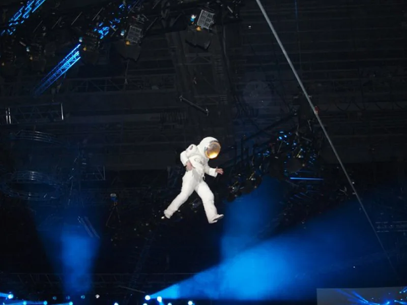
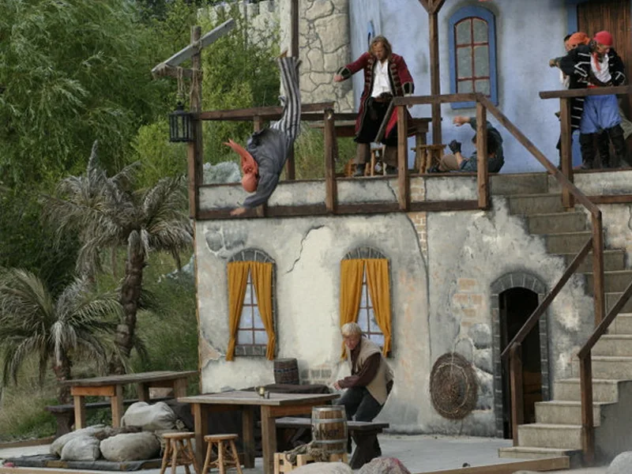
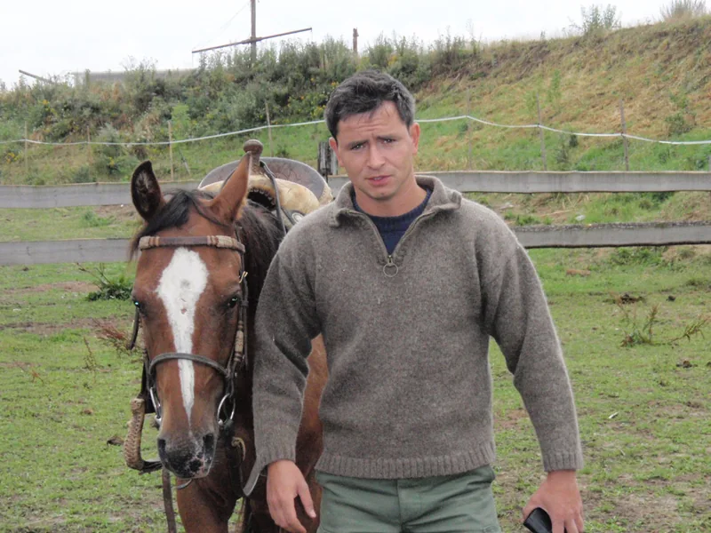

Stunt
Insights into stunts, stage combat and acting. For groups, schools or productions – from individual choreography to complete scenes.
Read more
My stunt workshop offers an in-depth introduction to stunts, stage combat and acting. Depending on the engagement, we develop small or large choreographies for plays, dance performances and film scenes, or even entire stage productions. We can also create material for a showreel.
Schools and classes can book the workshop for sports days or class reunions, for example. I can come to you, or you can visit me. A stunt workshop promotes health, fitness, athletic ability, coordination and other physical skills.
Who is this workshop for?
The workshop is primarily aimed at professional and amateur actors, theatre initiatives, theatres, clubs, martial arts schools and school students. Anyone who brings enthusiasm and a serious interest in learning is welcome.
What will you learn?
- Stunts and combat for film and theatre
- Acting, reactions, stretching and mime
- Falling techniques and body control
- Gymnastics and circus arts
- Stick and sword fighting, fencing basics
- Theatre sports, martial arts and body stunts
- Falls, jumps and convincing performance on camera
The programme teaches falling techniques, body control, mime and combat for film and theatre. You learn to perform complex sequences safely, make falls look convincing and position yourself correctly for the camera.
What should you bring?
Comfortable sportswear, indoor sports shoes and a positive attitude. For groups of more than five people outside Dresden, a sports hall is ideal; a courtyard or outdoor space is also possible. A hall in Dresden is available for individuals or small groups in bad weather. All other equipment is provided.
Weekend workshop: action riding
A stunt-riding workshop weekend is also available. This special format takes place in March, April, October and November and is intended for experienced riders or stunt performers who want to develop their riding, stunt or action-riding skills. The basic rules and elements of stunt riding are put into practice, with equestrian vaulting forming an essential part. The workshop takes place in Leuthen. Horses and accommodation are available for a limited number of participants; camping is possible, with electricity, water and sanitary facilities provided.


